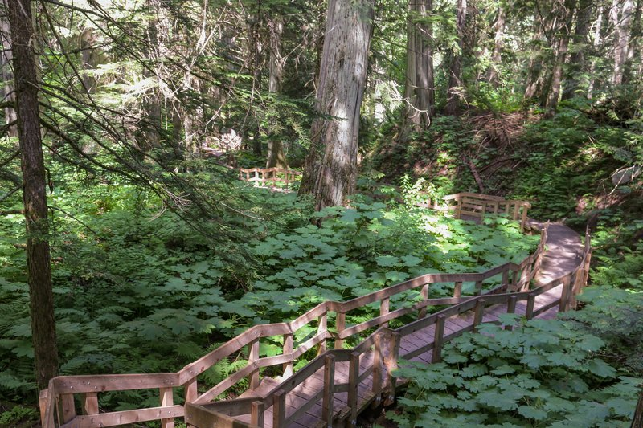

TRIP OVERVIEW
Day 1 – Lake McDonald · Trail of Cedars · Avalanche Lake · Logan Pass · Hidden Lake
Day 2 – Swiftcurrent Lake · Grinnell Glacier · Iceberg Lake · Cracker Lake
Day 1
🏨 From Hotel: 🚕 30 min → Lake McDonald
1.Lake McDonald
↳ The largest lake in Glacier National Park, stretching 10 miles through the western valleys with dense cedar forests lining the shore. Turquoise waters reflect the surrounding peaks, and pull-offs along the road offer excellent photography angles.

🚶 2 min · 🚕 5 min
2.Trail of Cedars
↳ A 1-mile wheelchair-accessible boardwalk loop through old-growth western red cedar forest, descending to Avalanche Gorge where Cedar Creek has carved a narrow canyon with 100-foot walls. Mostly flat, 30 minutes round-trip with cathedral-like canopy and cascading water.

🚶 5 min · 🚕 3 min
3.Avalanche Lake
↳ A scenic hiking destination reached via 5.9-mile round-trip to an alpine lake ringed by towering cliff walls and waterfalls. The basin reflects granite peaks in a dramatic cirque landscape.
🏛️ Open 24/7
⏰ ~1 hr 30 min
📊 Elevation gain: 757 ft

🚕 40 min
4.Logan Pass
↳ The highest point on Going-to-the-Sun Road at 6646 feet, straddling the Continental Divide. The visitor center and panoramic viewpoints reveal dozens of glaciated peaks. Views transition from western cedar valleys to eastern alpine tundra.

🚶 5 min · 🚕 5 min
5.Hidden Lake
↳ A 2.7-mile round-trip hike ascending a raised overlook with views into Hidden Lake basin. Mountain goats frequently appear on exposed alpine ridges. Wildflower meadows bloom July through August with pink primrose and glacier lilies against the Continental Divide.
🏛️ Open 24/7
⏰ ~1 hr 30 min
📊 Elevation gain: 551 ft

🚕 50 min → hotel
Day 2
🏨 From Hotel: 🚕 15 min → Swiftcurrent Lake
1.Swiftcurrent Lake
↳ A pristine alpine lake in Many Glacier valley surrounded by peaks above 3000 feet and hanging glaciers. Turquoise water reflects Mount Cleveland and Mount Jackson. The historic boathouse offers boat shuttles reducing hiking distances by 2–4 miles.
🚕 20 min
2.Grinnell Glacier
↳ The flagship Many Glacier hike, climbing over 2,000 feet over 10 miles to a receding glacier at a pristine cirque lake. Route traverses multiple turquoise lakes including Swiftcurrent, Lake Josephine, and Grinnell, with boat shuttles available to reduce the hike to 7.6 miles.

🚕 20 min
3.Iceberg Lake
↳ An accessible high-alpine option climbing 1200 feet over 9.6 miles to a pristine lake where icebergs float year-round in summer, calved from hanging glaciers. Trail traverses subalpine forest and wildflower meadows with views of Mount Wilbur and Mount Jackson.

🚕 20 min
4.Cracker Lake
↳ A less-crowded alternative with equal scenic reward, climbing 1400 feet over 12.4 miles to a brilliant turquoise lake beneath Mount Siyeh. Trail passes through forest and subalpine terrain, emerging into an open basin with cascading streams and hanging glacier visible on the mountainside.

🚕 15 min → hotel
🗓️ Weekly Closures
No notable city-wide weekly closures in Glacier National Park.
📅 Tours
No tour operators meet the minimum ratings threshold for Glacier National Park tours.
☕ Cappuccino
No café within 25 min walk of the hotel.
🫕 Restaurants Near Hotel
No restaurants within 25 min walk of the hotel.
🍽️ Downtown Restaurants
No restaurants in downtown East Glacier.
🍮 Local Tastes
No recommended foods to taste in Glacier National Park.
🚗 Food Delivery
No delivery services available in Glacier National Park.
🎭 Shows, Performances & Concerts
No exceptional shows, performances, or concerts in Glacier National Park.
🚆 Train Stations Near Hotel
🚄 East Glacier Park Station
↳ Amtrak Empire Builder stops here; historic Amtrak depot is 0.5 mile from the hotel. Daily service connects Seattle, Glacier, and Chicago on a scenic alpine route.
🚶 5 min · 🚕 2 min
⛲️ Day Trips by Train
Whitefish · 30 min
↳ 30 min north on Empire Builder to Whitefish; larger town with restaurants, galleries, and shops. Return same day on evening train.
🎫 book at: Omio
⭐ Michelin Restaurants
No Michelin-starred restaurants in the Glacier National Park area. The Michelin Guide does not cover Montana.